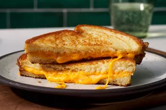

Grilled Cheese Recipe

Description
Golden, crispy sourdough hug a gooey blend of melted cheddar and mozzarella,
creating a classic grilled cheese that delivers the perfect crunch-to-cheese
ratio. Simple, nostalgic, and endlessly satisfying.
Ingredients
Note: these are ingredients for 1 serving
- 4 slices white bread
- 3 tablespoons butter, divided
- 2 slices Cheddar cheese
Steps
- Gather all ingredient.
- Preheat a nonstick skillet over medium heat. Generously butter one side of a slice of bread.
- Place bread butter-side down in the hot skillet; add 1 slice of cheese.
- Butter a second slice of bread on one side and place butter-side up on top of cheese.
- Cook until lightly browned on one side; flip over and continue cooking until cheese is melted.
- Repeat with remaining 2 slices of bread, butter, and slice of cheese. Serve and enjoy!
Can also be found on here on AllRecipes
Home